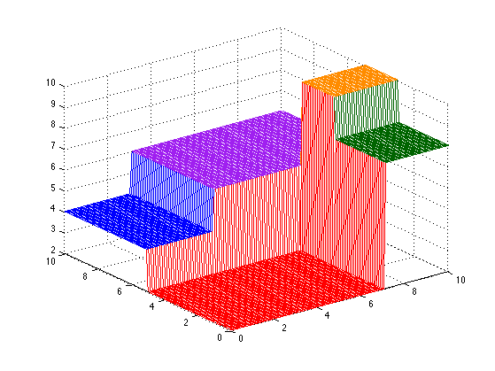

% The values used in the latex pstricks figure x11 = 5; x12 = 3; x21 = 7; x22 = 3; % Values for the tree in each region r = 2:2:10; % Create a mesh for X1 and X2 h = 0.1; M = 10; X1 = 0:h:M; X2 = 0:h:M; % The matrix to store the values of the tree tree = zeros(length(X1),length(X2)); % The five regions - manually assign values % not that the inequalities revere because of how the vectorized logical conditions compare. tree(X1 <= x11, X2 <= x21) = r(1); tree(X1 > x11, X2 <= x22) = r(2); tree(X1 > x11, X2 > x22) = r(3); tree(X1 <= min(x11,x22), X2 > x21) = r(4); tree(X1 <= x11 & X1 > x12, X2 > x21) = r(5); % Define a colormap so the colors are consistent between latex and Matlab Col = [ 255 0 0; 0 0 255; 160 32 240; 0 100 0; 255 140 0; ] / 255; % plot the mesh colormap(Col); mesh(X1,X2,tree); printPmtkFigure('tree3d');